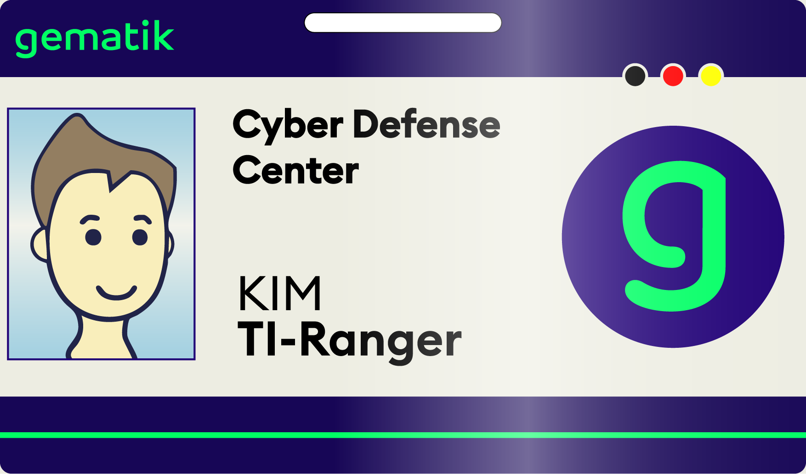
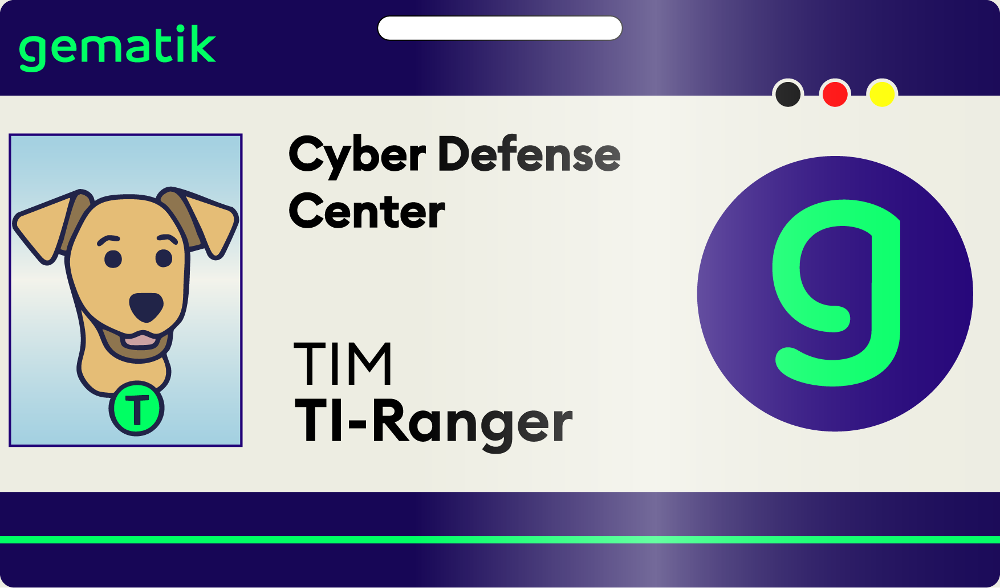
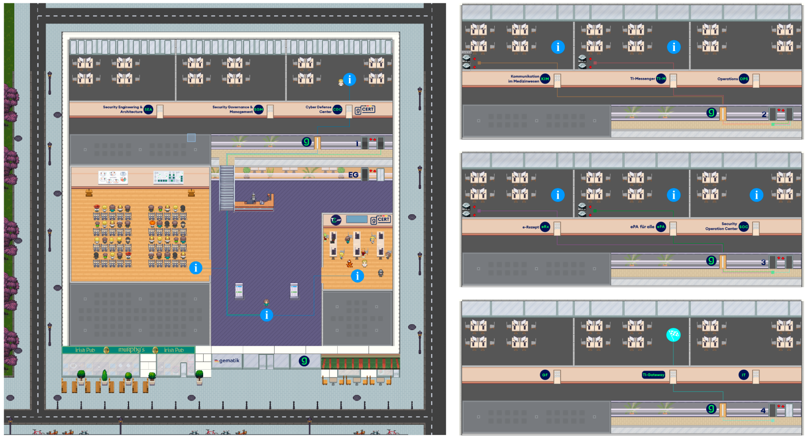
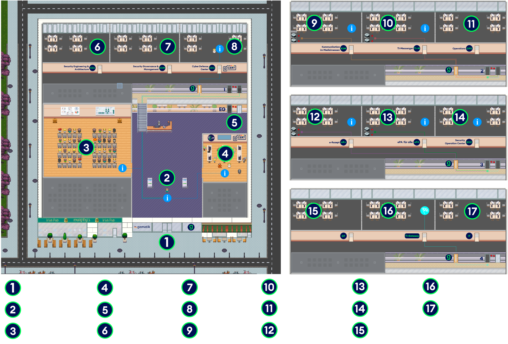
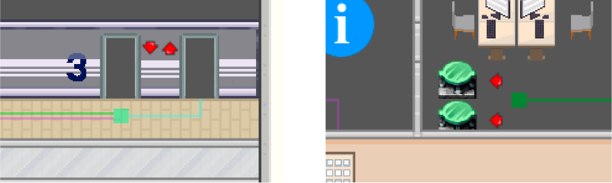

Wilkommen bei der gematik
Willkommen zu eurem ersten Tag als TI-Ranger im Cyber Defense Center der gematik. Wir freuen uns sehr, euch begrüßen zu dürfen.
In der gematik arbeiten die Fachteams mit ihrem umfangreichen Knowhow über E-Health und Informationssicherheit tagtäglich daran, die Infrastruktur für das digitale Gesundheitswesen weiterzuentwickeln. Dafür stehen sie mit mit allen Akteuren, Stakeholdern und Partnern im Gesundheitswesen im engen Austausch. Die gematik treibt dabei in zentraler Position zum Wohle aller die Digitalisierung weiter voran und gestaltet diese mit.
Bereichsassistenz Sicherheit
Sicherheit in der digitalen Medizin beruht auf weit mehr als der reinen Verschlüsselung von Informationen. Sie entsteht durch das harmonische Zusammenspiel zahlreicher Faktoren, die gemeinsam das Fundament für vertrauenswürdige und zukunftsfähige Lösungen bilden.
Transparenz, Zusammenarbeit und Interoperabilität sind dabei ebenso entscheidend wie ein gemeinsames Verständnis und das koordinierte Zusammenwirken interdisziplinärer Teams.
Nur durch dieses Zusammenspiel entsteht ein ganzheitlicher Sicherheitsansatz, der den Schutz sensibler Daten gewährleistet und zugleich Innovation im Gesundheitswesen fördert.
Ihr erhaltet hiermit eure Ausweise, mit denen ihr euch größtenteils frei im Gebäude bewegen könnt.


Unsere TI_CTF-Kolleginnen und -Kollegen, welche die Mission Control auf der rechten Seite aufgestellt haben freuen sich über euren Besuch. Im Atrium finden aktuell spannende Vorträge rund um die gematik und die Telematikinfrastruktur statt.
Verschafft euch am besten zunächst einen Überblick auf unserem Gebäudeplan:

Klicke auf das Bild zur erweiterten Ansicht

Orientiert euch an den farbcodierten Laufwegen. So gelangt ihr schnell und ohne Umwege durch das Gebäude zu den richtigen Stationen:
- Info Bereiche
-
Leitlinie zu den Aufgaben
- Kommunikation im Medizinwesen (KIM) (2.OG)
- TI‑Messenger (TI-M) (2.OG)
- ePA für alle (3.OG)
- e‑Rezept (eRX) (3.OG)
- Leitlinie zum TI‑Gateway (4.OG) (Finale)
In den Fachbereichen sowie in den Sub‑Welten stehen euch Teleporter zur Verfügung, mit denen ihr spontan zwischen den Stationen wechseln könnt. Für den Wechsel zwischen den Stockwerken empfehlen wir die Nutzung der Fahrstühle.
